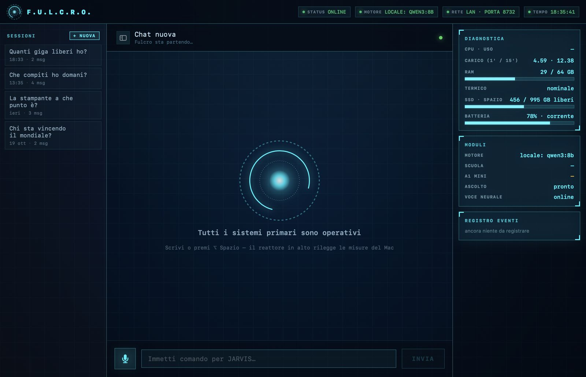

Un assistente che sta tutto sul tuo Mac.
Niente cloud, niente account, niente abbonamento. Gli dici ⌥ Opzione + Spazio e parli: lui esegue sul computer, e ti risponde a voce.
- Funziona davvero solo con Ollama installato (modello
qwen3:8b): è il cervello. - Al primo avvio macOS lo blocca: non è un virus, è una firma locale. Si apre lo stesso con due clic.
- Le voci che non puoi fare non sono simulate: dicono «non disponibile».

Cosa gli puoi chiedere
Parlare e dettare
⌥ Spazio registra, trascrive in locale con whisper e risponde con una voce neurale italiana (piper). Se non installi nessuno dei due, scrivi nella chat e parla con la voce di sistema.
Usare le app senza rubarti lo schermo
Le apre in background, legge cosa serve, ti dà il resoconto e alla fine richiude quelle che ha aperto lui. Le app che hai aperto tu non le tocca.
Sapere cosa c'è sul Mac
Inventario automatico di tutte le app installate (architettura, permessi, cosa si può pilotare), spazio, RAM, carico, temperatura termica, perché un'app si è piantata leggendo i crash report.
Si costruisce i ponti per le app nuove
Quando installi qualcosa, Fulcro legge il bundle della app — gli schemi
URL, i tipi di file che apre e i comandi che la app dichiara da sé nel suo
dizionario AppleScript — e se ne fa una scheda in
~/.jarvis/app/integrazioni/. Non è codice: è il vocabolario della
app, scritto da chi l'ha fatta. Se ne installi dieci insieme, ne legge tre per
giro: non è un lavoro urgente.
A batteria sta fermo, sul serio
Staccato, di default non si sveglia proprio: niente sorveglianza, niente letture, niente anelli che girano (⌥ Spazio lo risveglia per la domanda che gli fai). Misurato: ~7 secondi di CPU per ora a sonno, contro i ~25 all'alimentatore con la finestra chiusa. Se preferisci che si chiuda del tutto, glielo dici («a batteria esci»). E se scotta, rallenta da solo.
Ti risponde mentre sta ancora pensando
Non aspetta di aver scritto tutta la frase per parlare: appena una è finita, quella dice. Misurato sul modello locale a caldo: 1,6 secondi per la prima parola invece di ~4.
Scuola e agenda
Lista dei compiti in un file di testo, materie di domani lette dal tuo orario, un controllo che ti avvisa se sconfini su un gioco mentre dovresti studiare.
Cose del mondo reale
Meteo, classifica di Formula 1, notizie, stato di una stampante 3D Bambu in rete locale con avviso a voce quando la stampa finisce.
Comandi veri, con un cancello
Esegue comandi sul Mac: lettura libera, tutto il resto chiede un clic, e
sudo, portachiavi, .ssh e cancellazioni massive
sono rifiutati senza possibilità di override.
Cosa ti serve
| Obbligatorio | Mac con chip Apple (M1, M2, M3, M4) e macOS 14 o più nuovo. Non è compilato per Intel. |
|---|---|
| Il cervello | Ollama e il modello qwen3:8b (ollama pull qwen3:8b). Senza, Fulcro si accende ma non capisce. |
| Per ascoltarti | brew install whisper-cpp e il modello ggml-small.bin in ~/.jarvis/models/. |
| Per parlare bene | pip install piper-tts e una voce italiana in ~/.jarvis/piper/; altrimenti usa la voce di sistema. |
| Facoltativo | Una chiave Gemini in ~/.jarvis/gemini.txt se vuoi le spiegazioni lunghe col cloud. Di default non esce niente. |
Installazione
- Trascina
Fulcro.appin Applicazioni dopo aver aperto lo zip. - Aprilo con il tasto destro → Apri, non con il doppio clic, e conferma «Apri». La prima volta basta.
- Se macOS dice che l'app è danneggiata o non verificabile: Impostazioni di Sistema → Privacy e sicurezza, in basso c'è «Apri comunque».
- Se preferisci la riga di comando, togli il flag di "scaricata da internet":
Scrittila tu: non premere pulsanti che eseguono comandi per te.xattr -dr com.apple.quarantine /Applications/Fulcro.app - Dagli i permessi che chiede: Registrazione schermo, Microfono, Accessibilità. Quelli che non dai restano scritti «negato», non fingono di funzionare.
Una cosa che vedrai e non è un errore: la cartella
dei dati si chiama ~/.jarvis/, non ~/.fulcro/. È il nome
storico del progetto ed è scritto nel programma: dentro ci sono solo i tuoi
file, e puoi cancellarli quando vuoi.
Perché questo passaggio: la firma con un account Apple sviluppatore costa 99 $ l'anno e serve a pagare un ente che controlli chi sei. Fulcro è un progetto personale: il codice è di uno che si è annoiato a scrivere script, l'app non contiene chiavi né dati di nessuno, e la scelta è stata non far pagare niente a nessuno. Se non ti fidi, non scaricarlo: è esattamente il motivo per cui esiste questa pagina.
Privacy, in concreto
- Le conversazioni restano in
~/.jarvis/logs/, un file di testo che puoi aprire e cancellare quando vuoi. - Le uniche cose che escono di rete sono letture: meteo, classifiche, notizie, pagine web. Nessuna telemetria, nessun aggiornamento automatico.
- Il cloud (Gemini) viene usato solo per spiegare un argomento, solo se hai messo la tua chiave, e i testi personali — messaggi, mail, screenshot — non vengono mandati: arriva solo «contenuto letto sul Mac, N caratteri».
- Quando si costruisce il ponte di una app, se hai la chiave Gemini escono solo il nome della app, il suo identificatore, la categoria, la versione e i comandi che la app dichiara nel proprio bundle: nessun percorso, nessun nome tuo. È scritto dentro la scheda stessa, così puoi controllare.
- Il numero di telefono per le prove di invio si legge da
~/.jarvis/numero.txt: nell'app non c'è il numero di nessuno. - Non c'è niente di chi ha scritto Fulcro dentro Fulcro. Nome, città,
età, contatti e host di rete non sono compilati nel programma: si leggono da
nome.txt,citta.txteraspberry.txtnella tua cartella~/.jarvis/. Al primo avvio l'app non sa niente di te, ti chiede come chiamarti e da lì si costruisce la sua memoria (profilo.md,compiti.md,orario.md), che resta a casa tua e puoi cancellare quando vuoi.
Cosa non fa
- Non legge le temperature dei sensori: macOS non le concede senza root, e root non viene chiesto. Quelle righe sono state tolte invece di inventare i numeri.
- Non manda mail da solo: serve una casella configurata sul tuo Mac.
- Non gira su Intel, non gira su Windows, non ha un'app per il telefono (l'iPad può parlargli attraverso la pagina web locale, se la attivi).
- Non impara da solo quello che fanno altre persone: conosce solo il tuo Mac.
Commenti
Niente login, niente account. Può scrivere solo chi ha Fulcro installata: il modulo chiede il codice di otto caratteri che l'app mostra nella finestra — barra laterale → Collegamenti → Codice commenti. È il modo più onesto che c'è per far parlare dell'app solo con chi la sta usando davvero.
Un progetto personale
Programmatore: gio.
Un progetto personale, iniziato come esercizio e finito a diventare l'unico modo
che uso per parlare col computer. È gratuito e senza account. Se lo provi e
qualcosa non va, la cartella ~/.jarvis/logs/ contiene la verità su
quello che Fulcro ha fatto davvero.
Nessun account, nessun pagamento, nessun tracciamento su questa pagina.
Sto leggendo i commenti…